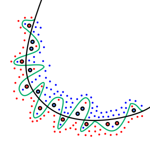

Sharif university of technology - Mathematics and Computer science department
Semester: Spring 2024 | Units: # | Lectures: Sun 09:00 to 12:00, Tue 09:00 to 12:00 | Prerequisites: ---

This course offers a comprehensive overview of machine learning and statistical pattern recognition, covering topics such as
supervised learning (including generative/discriminative learning, parametric/non-parametric learning, neural networks, support
vector machines), unsupervised learning (encompassing clustering, dimensionality reduction, kernel methods), and learning theory.
Some basic things
Welcome to the Machine learning theory course.
The material is developed for both CS students under supervision of Dr. Seyyedsalehi.